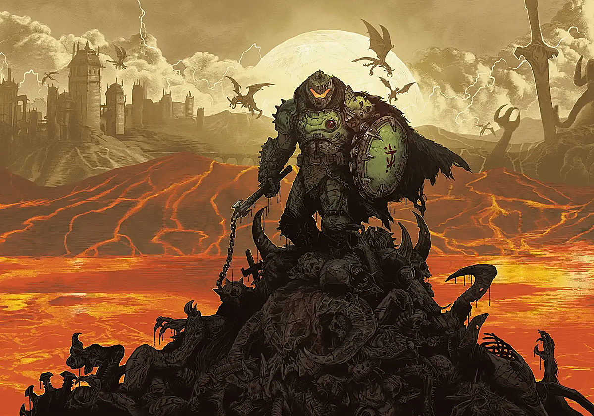
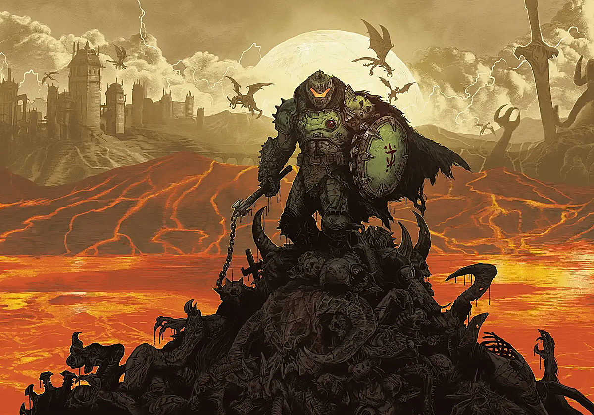
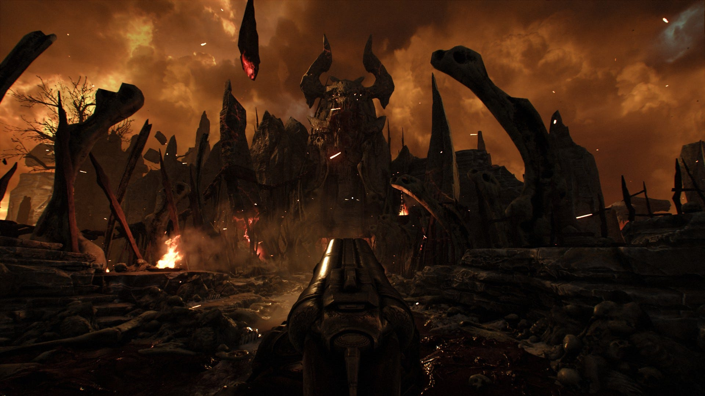
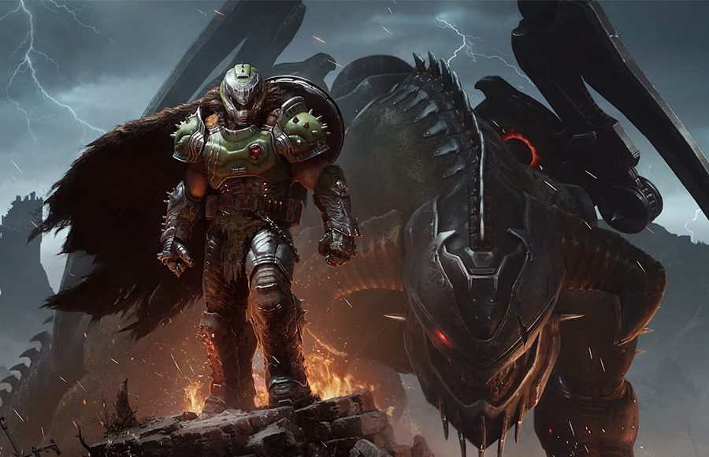
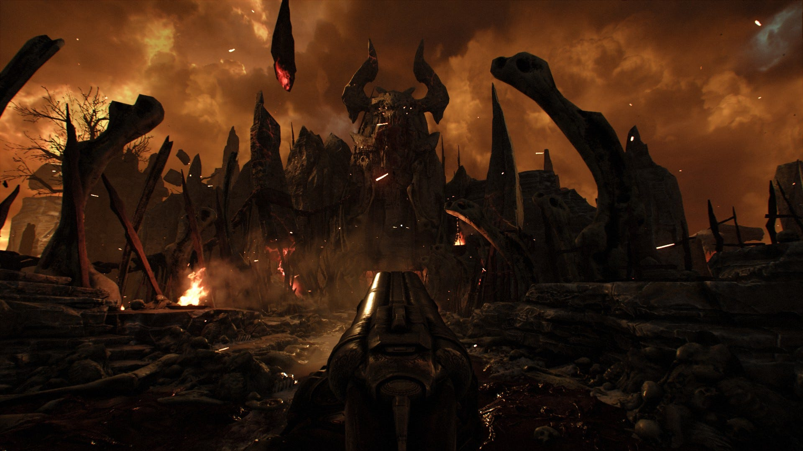
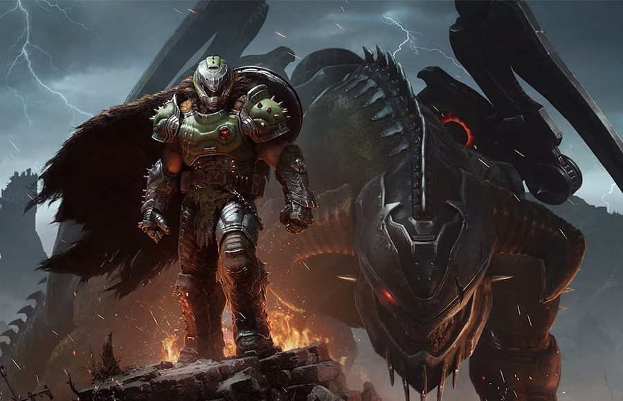

El videojuego de matar demonios : DOOM
La franquicia Doom es una serie de videojuegos de disparos en primera persona creada por John Carmack.
Esta franquicia incluye novelas, cómics, juegos de mesa y adaptaciones cinematográficas.

Galería de imágenes
 

 




Tabla de datos
| Videojuego | Año de salida | Plataformas | Nota media |
|---|---|---|---|
| Doom | 1993 | MS-DOS | 86/100 (Comunidad) |
| Doom II | 1994 | MS-DOS | 90/100 (Comunidad) |
| Doom 3 | 2004 | Windows y Linux | 87/100 |
| Doom (2016) | 2016 | Windows, PS4 y Xbox ONE | 79/100 |
| Doom Eternal | 2020 | Windows, PS4 y Xbox ONE | 88/100 |
| Doom : The Dark Ages | 2025 | PS5 y Xbox Series X/S | 83/100 |
Formulario
Introduce la nota que le pondrías 1-5 a Doom : The Dark Ages
Los datos introducidos son recopilados sin interés lucrativo